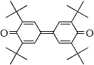

Abstract
The electrochemical Wacker type oxidation of terminal olefins by using palladium chloride or palladium acetate and tri(4-bromophenyl)amine as a recyclable mediator in either a devided cell or and undivided cell afforded the corresponding methyl ketones in good yields.
The Wacker type process with palladium(II) chloride and copper(II) as catalysts in aqueous media under oxygen is one of the useful methods for conversion of terminal olefins to methyl ketones1. A variety of modified methods of this reaction by devising the reoxidation process for palladium(0) to palladium(II) have been reported in order to avoid chlorination encountered in the process with copper(II) chloride2.
Electrooxidation methods were also employed for the direct oxidation of Pd(0) to Pd(II)3 or for generation of recyclable oxidents such as quinone4 or ferric chloride5as a co-oxidant for regeneration of Pd(II) catalyst. Usually divided cell systems have been utilized to avoid the deposition of palladium metal onto the cathode, which often led to unsatisfactory reaction conversion6. Herein, we report an improved procedure for the electrochemical Wacker type reaction by use of triarylamine as a recyclable mediator7 for regeneration of Pd(II) from Pd(0). The electrolysis can be achieved in both a divided or an undivided cells. In this double mediatory system, electrooxidation effects formation of triarylamine cation radical from triarylamine which regenerates palladium(II) species.
Table 1
Electrochemical Wacker Oxidation of
1-Undecene (1a) with Organic Mediatorsa
Entry |
Organic Mediator |
Products/Yields |
Total Yieldd |
||
2ab |
Other Ketonesc |
||||
1 |
 |
3 |
39% (43%) |
51% (57%) |
90% |
2 |
 |
4 |
30% (39%) |
46% (61%) |
76% |
3 |
5 |
27% (31%) |
51% (69%) |
88% |
|
- Reaction is carried out in a CH3CN/H2O (9:1 V/V,
10 ml)-Et4NOTs-(Pt)-(Pt) system in the presence of
Pd(OAc)2 (5 mol%) and an organic mediator
(20 mol%) at RT (20°C) in a divided cell.
Conditions: 3.0 Volts (using 0.4-5.5 mA of current);
Electricity charged: 2.5-3.0 Faradays/mol. - Yields determined by GC, based on internal standard
(2-octanone). Selectivity for 2a shown in parentheses. - Combined yield of 3-, 4-, and 5-undecanones (by GC).
- Combined yield of 2a and other ketones.
The cation radicals of triarylamines are stable8 and hence useful as redox catalysts for indirect electrooxidations such as deprotonation and irreversible cleavage of carbon- sulfur bond7. Redox step by the cation radical of triarylamine is considered to involve the formation of an intermediate complex, which would lead to a negative shift of the oxidation potential compared with those of the substrates9. These features of the cation radicals of triarylamines are of interest as a recyclable organic redox for regeneration of Pd(II) from Pd(0) in the double mediatory system.
The electrolyses were carried out either in a divided or undivided cell under a constant applied voltage. Typically, the electrolysis in an undivided cell was performed by using the substrate (1 mmol), PdCl2 (5 mol%), and (4-BrC6H4)3N (5 mol%) in an MeCN-H2O (7:1)-(Pt)-(Pt) system at an applied voltage of 3 volts and a current of 2-3 milliamps for 2-3 Faradays/mol, giving the desired methyl ketones. The results of the electrochemical Wacker oxidations are given in Table 2.
In our attempt to find out the most favorable organic mediator for the electrochemical process in the double mediatroy system, three kinds of organic redoxes such as triarylamine (Entry 1 in chart below), dephenoqhinone (Entry 2 in chart) and hydroquinone (Entry 3) were examined for the oxidation of 1-undencene (1a). It is known that in general unsubstituted terminal olefines like 1a are susceptible to the isomerization of the double bond to internal posititions during the palladium-catalyzed Wacker process. As shown in Table 1, the ratio of the desired 2-undecane (2a) vs. other ketones such as 3-, 4, and 5- undecanones is affected by the kind of organic mediator.
Among three organic mediators attempted, the highest yield of the Wacker oxydation product and the highest product selectivity of 2a are observed with tri(4-bromophenyl)amine.
The efficiency of the electrooxidation is also affected by the kind of palladium complexes. PdCl2 and Pd(OAc)2 were preferentially used in the undivided and divided cell systems, respectively.
Table 2
Electrochemical Wacker Process with a Combination of Pd(OAc)2
or PdCl2 and (4-BrC6H4)3N in a Divided or an Undivided Cella
- Reaction carried out by useing substrates 1 (1 mmol) and Pd(OAc)2 (divided) or PdCl2 (Undivided)
(0.05 mmol) in an MeCN-H2O (7:1)-0.5 M Et4NOTs-(Pt)-(Pt) system at RT for 2.0-3.0 F/mol of electricity. - Yields based on isolated products.
The combined use of PdCl2 or Pd(OAc)2 palladium chloride or palladium acetate with tri(4-bromophenyl)amine (3) was applied to the oxidation of a variety of terminal olefins and the results are shown in Table 2. The desired methyl ketones 2 are obtained in good yields when the starting olefins possess substituents such as a methoxy group (Entry 2), carbonyl functions (Entries 3-5) and an amino group (Entry 6) at the neighboring positions. A small ammount of by-products such as aldehyde (Entry 2) and dehydrated compound (Entry 9) are found. Up to 50 turnovers of the palladium catalyst could be achieved without noticeable loss of activity of the electrolysis system.